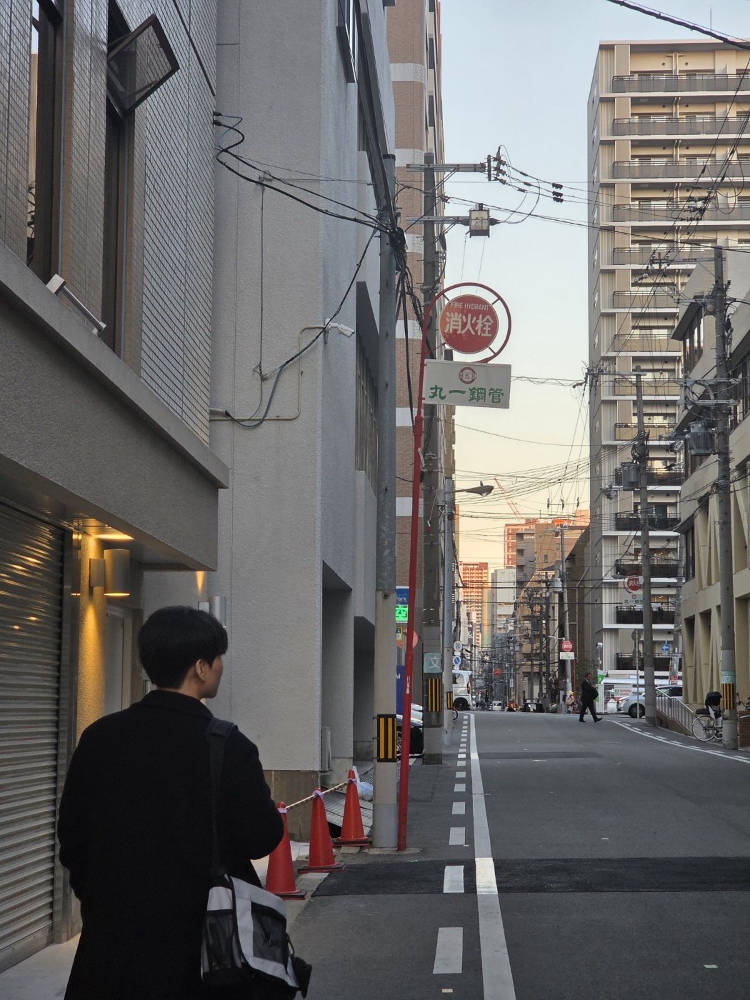

I'm a
한눈에 보는 기본 정보

"재미"있는 게임의 개발자가 되기를 희망합니다.
UE5, Game AI
Education · Skills · Projects · Study
학력/전공
주요 기술 스택
앞으로 공부할 사이드 프로젝트 목록입니다.
일정한 수치를 넘겨도 한순간에 넘어지는 현상이 발생 이를 직접 관측하고 해결방법 제안해보기
실제 게임 강화학습 예제 구현해보기
여기에 게시글/링크를 추가할 수 있어요.
What i am fond of recently
관심 주제